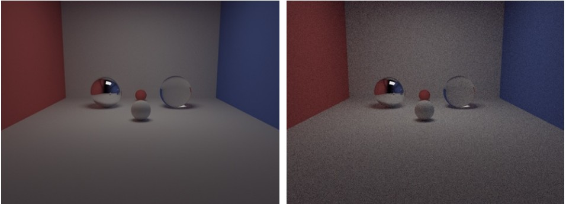
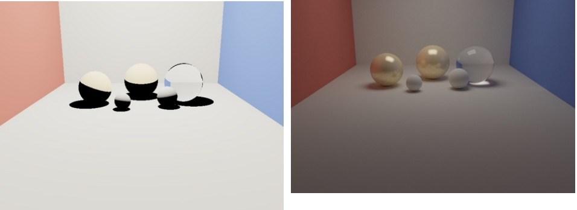

CPU Path Tracer: A Physically-Based Renderer in C++
Overview
A complete physically-based CPU renderer, built end to end in C++. The system spans two rendering paradigms—a recursive Whitted-style ray tracer and a Monte Carlo path tracer—over a shared material, light, and scene stack, with next-event estimation (NEE), a Cook–Torrance glossy BRDF with Schlick Fresnel, Russian-roulette termination, BVH acceleration, thin-lens depth of field, and deterministic multithreading. Every feature is validated by a controlled ablation render, and the parallel renderer scales to a 48.99× speedup on 64 threads while producing byte-for-byte identical output to the serial renderer.
Background & Motivation
Physically-based rendering is Monte Carlo estimation of the rendering equation. Outgoing radiance is the sum of emitted light and the hemisphere integral of the BRDF-weighted incident radiance; a path tracer estimates this integral by sampling directions and averaging single-sample estimators of the form fr·Li·(n·ωi) / p(ωi).
Naive sampling converges too slowly to be practical. Uniform hemisphere sampling wastes samples on low-contribution grazing directions, and delta lights—point, directional, and spot sources—have probability zero of being hit by a random direction at all. The motivating question of this project was therefore concrete: which variance-reduction techniques (next-event estimation, cosine-weighted sampling) and which systems techniques (BVH, deterministic multithreading) actually close the gap between a correct-on-paper estimator and a renderer that produces clean images in seconds.
Renderer Design
Two renderers share one scene stack. The Whitted-style tracer casts primary rays, evaluates direct lighting with shadow rays on diffuse and glossy surfaces, and recurses on mirror and glass materials using the reflection law r = i − 2(i·n)n and Snell refraction, falling back to total internal reflection when sin²θt > 1. The path tracer replaces this fixed recursion with stochastic multi-bounce transport over diffuse, mirror, glass, and glossy materials. New ray origins are offset along the geometric normal by 10⁻⁴ to avoid floating-point self-intersection.
A unified material and light model serves both paths. Materials cover Lambertian diffuse, ideal reflection, ideal dielectric refraction, and a Cook–Torrance microfacet glossy BRDF. Lights are split by type: rectangular area lights participate in ray intersection as scene geometry and are sampled by area for direct lighting, while point, directional, and spot lights are treated analytically as delta distributions in NEE, with spot lights shaped by an inner/outer cone angle and a smoothstep falloff t²(3−2t). A thin-lens camera model and a post-processing pipeline (Reinhard tone mapping followed by 1/2.2 gamma) complete the frame.
Core rendering logic is implemented independently on top of the course PA1 framework (scene parser, basic geometry interfaces, vector/matrix math library); no third-party renderer source was used.
Key Techniques
Next-event estimation. Direct lighting is split from the path integral and estimated by explicitly sampling lights: a uniform point on an area light of area A contributes with the geometry term (n·ωi)(nL·−ωi)/‖xL−x‖² · A, and with multiple lights the pdf accounts for uniformly choosing a light first. Delta lights collapse to a deterministic direction with pdf = 1 and visibility resolved by a shadow ray. A fromDelta flag prevents double-counting area-light emission after NEE while still letting mirror/glass delta-BSDF paths see lights directly.
Cook–Torrance glossy BRDF. The specular term D(h)F(ωo,h)G(ωo,ωi) / 4(n·ωo)(n·ωi) uses a Beckmann normal distribution D, Smith G1 geometry term G, and Schlick Fresnel F. Roughness continuously interpolates the material from near-mirror to near-diffuse.
Schlick Fresnel and total internal reflection. With Fresnel enabled, glass mixes reflection and refraction by Fr(θ) = F₀ + (1−F₀)(1−cos θ)⁵, F₀ = ((ηi−ηt)/(ηi+ηt))². The first bounces split both lobes deterministically; deeper paths use Russian roulette to choose one lobe and keep the branching factor bounded.
Unbiased termination. After recursion depth 3, Russian roulette survives a path with probability p equal to the largest color channel of its throughput beta; terminated paths return 0 and survivors are reweighted by beta/p, keeping the estimator unbiased.
Importance sampling and acceleration. Lambertian lobes use cosine-weighted hemisphere sampling with p(ω) = cos θ/π, which cancels the cosine factor in the integrand and measurably lowers variance over uniform sampling at equal sample counts. Triangle meshes (OBJ, with barycentric interpolation of vertex normals) are accelerated by a BVH.
Thin-lens depth of field. A pinhole chief ray locates the focus point Pf on the focal plane; the final ray is then cast from a point PL sampled on a lens disk of radius aperture toward Pf, so only the focal plane stays sharp.
Deterministic multithreading. Rows are dispatched dynamically through a single std::atomic counter with fetch_add(1)—the equivalent of an OpenMP dynamic schedule with no external dependency—over std::thread workers capped at 64. Each pixel's RNG is seeded by pixelSeed(baseSeed, x, y), which depends only on the base seed and pixel coordinates, never on thread count or scheduling order.
Validation & Performance
Every effect is verified by a controlled ablation. NEE on/off at 256 spp: identical estimator expectation, but NEE removes most shadow-region noise, while NEE-off paths must randomly hit a small-solid-angle area light and stay noisy at equal cost. Fresnel on/off at 512 spp: with Fresnel off, glass behaves as pure refraction; with it on, silhouettes and grazing angles pick up environment reflections. Total internal reflection: water (η=1.33, critical angle ≈ 48.8°) transmits a larger, softer background region than glass (η=1.50, critical angle ≈ 41.8°). Roughness sweep 0.12 / 0.35 / 0.68 on three Stanford Bunnies moves highlights from mirror-sharp to near-diffuse. Further ablations cover gamma on/off, cosine-weighted vs. uniform hemisphere sampling at 64 spp, flat vs. interpolated shading normals, and pinhole vs. thin-lens depth of field (aperture 0.30, focal distance 10.0).
Parallel scaling is near-linear and exactly reproducible. On an 800×600 path-traced scene (64 spp, NEE on, seed 42): 1 thread 82.121 s (1.00×), 4 threads 20.790 s (3.95×), 16 threads 5.580 s (14.72×), 64 threads 1.676 s (48.99×). The 64-thread output differs from the serial output by max abs diff = 0—pure black difference image—so parallelization changes no lighting, shadow, material, or Fresnel result. The gap to ideal 64× is explained by Amdahl's law: serial phases (BVH construction, image write-out) plus thread creation and synchronization overhead.


{kind=link}

{kind=link}

Conclusion & Limitations
The project closes the loop from theory to a validated system: a Monte Carlo estimator of the rendering equation, made practical by next-event estimation and importance sampling, made fast by a BVH and near-linear deterministic parallelism, and made trustworthy by ablation renders that isolate each effect and by a byte-exact parallel correctness check.
Limitations found and documented. Delta point lights cast fully hard shadows even under path tracing with NEE—an issue surfaced at project acceptance when a mixed point + area light scene showed no visible soft-shadow advantage; the renderer logic was correct, and an area-light-only scene redesign produced the expected soft shadows and color bleeding. Parallel scaling stops at 48.99× of the ideal 64× due to serial BVH build and I/O phases, and the thread pool is hard-capped at 64 of the machine's 256 cores. As a CPU renderer, high-sample still lifes (1024 spp) remain a minutes-scale computation.